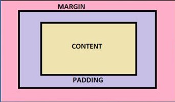

Q.Explain inline , internal and external stylesheet
Inline CSS: Requires the style attribute placed inside an HTML element.
Internal CSS: Requires the <element >style placed inside the head section of an HTML file.
External CSS: Requires the <link> element placed inside the head section of an HTML file.
Q.What is css box model?
The CSS box model is essentially a box that wraps around every HTML element. It consists of: margins, borders, padding, and the actual content.
The image below illustrates the box model:

Content - The content of the box, where text and images appear
Padding - Clears an area around the content. The padding is transparent
Border - A border that goes around the padding and content
Margin - Clears an area outside the border. The margin is transparent
Q.What is the difference between padding and margin?
In CSS, a margin is the space around an element’s border, while padding is the space between an element’s border and the element’s content. Put another way, the margin property controls the space outside an element, and the padding property controls the space inside an element.
Q.Difference between flex row and column
Q.Justify-content allows you to do what?
The CSS justify-content property defines how the browser distributes space between and around content items along the main-axis of a flex container, and the inline axis of a grid container
Q.Difference between absolute and relative positioning
position: relative places an element relative to its current position without changing the layout around it, whereas
position: absolute places an element relative to its parent's position and changing the layout around it.
Q.What is the z-index in CSS?
The z-index property specifies the stack order of an element.
An element with greater stack order is always in front of an element with a lower stack order.
Note:- z-index only works on positioned elements (position: absolute, position: relative, position: fixed, or position: sticky) and flex items (elements that are direct children of display:flex elements).